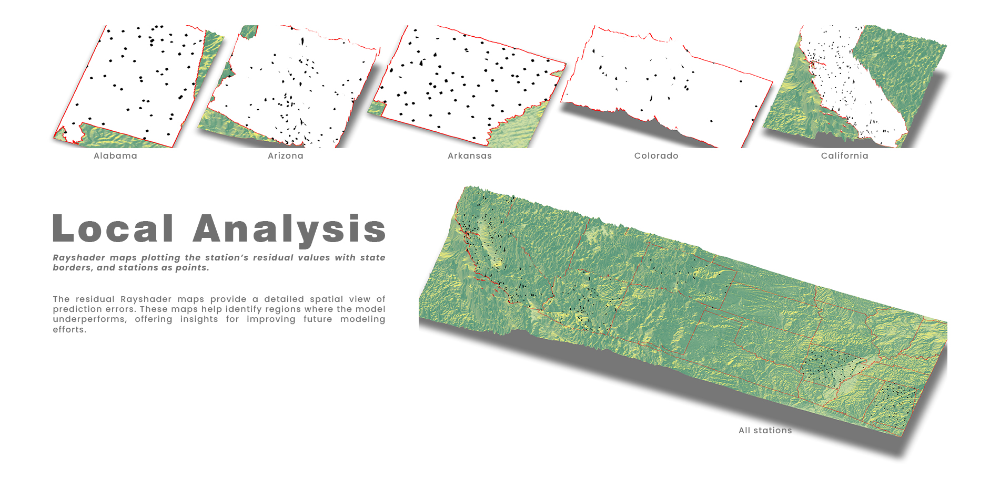

Local Analysis.
We applied geospatial and machine‐learning methods to quantify urban heat island effects across the continental U.S. We compute each station’s 2022 daily temperature range, extract spatial predictors (night lights, urban footprint, population density, climate zone, elevation), and fit three regression models—linear, random forest, and XGBoost—evaluating them by RMSE. After choosing the best model, we produce state‐level 3D ray-shader maps of its residuals, overlaying station points and state borders to visualize spatial patterns of over- and under-prediction.
